and
and  ; with degeneracy, first diagonalise
; with degeneracy, first diagonalise  inside the degenerate subspace.
inside the degenerate subspace.
Method (non-degenerate)
Expand
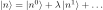
,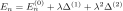
; impose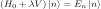
order by order, with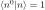
.- Order 1, project on
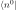
: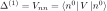
. - Order 1, project on
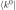
: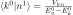
. - Order 2:
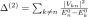
.
Validity:
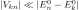
. The ground-state second-order shift is always negative: levels repel.Degenerate case
If
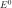
is -fold degenerate, the denominators vanish. Diagonalise the
-fold degenerate, the denominators vanish. Diagonalise the 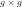
matrix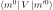
in the degenerate subspace: its eigenvalues are the first-order shifts and its eigenvectors the correct zeroth-order states (Schrödinger 1926).Worked example
Two-level system
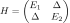
: exact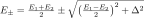
. Expanding for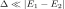
: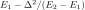
, the second-order formula. At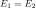
(degenerate):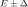
, the degenerate-theory result — an avoided crossing.Quadratic Stark effect
Ground state of hydrogen in
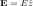
,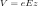
: first order vanishes by parity; second order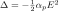
with polarisability . The level is degenerate:
level is degenerate:  and
and 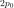
mix and split linearly,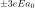
.Engineering applications
Quantum-confined Stark effect in quantum-well electro-absorption modulators (fast optical modulators for telecom); band-structure
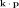
theory giving effective masses (effective mass); dispersive qubit read-out (second-order shift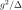
).Pitfall
Using non-degenerate formulas on degenerate levels gives infinities or wrong states; always check degeneracy first.